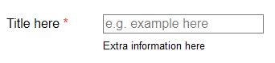

Making a user friendly web form
Here I have tried to put together a form that is simple, practical and adheres to user accessible guide lines.
<div class="field">
<label for="temp">Title here <span class="required-star"></span></label>
<input id="temp" class="js-required" type="text" name="temp"
aria-required="true" placeholder="e.g. example here" />
<span class="error js-required-error" style="display: none" role="alert">
Error message here
</span>
<span class="note">
Extra information here
</span>
</div>- Red stars for required fields is a common convention
- Examples as placeholders may occasionally be useful, but make sure they are understood as examples
- The aria-required and role attributes are there to help screen readers
- Error messages should appear when the user leaves the input (i.e. on blur), that way they appear as early as possible without being disruptive during typing
- If there are errors when the user submits the form an error message should appear at the top in addition to the inline errors
- Prefer radio buttons over select boxes when there are few options